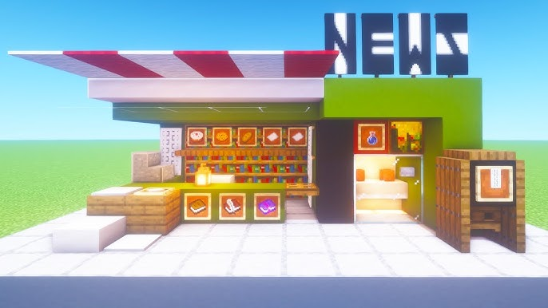
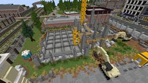
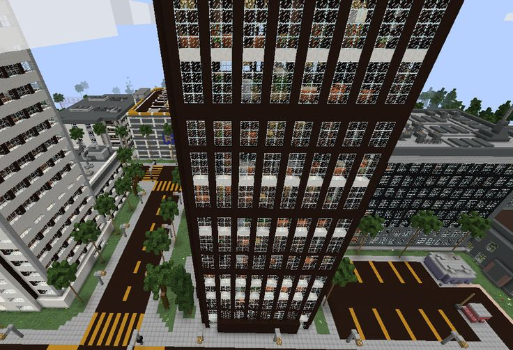

O Primeiro Furo de Reportagem
Publicado em:
Um jovem aldeão desempregado, que costumava trabalhar na imprensa de cana-de-açúcar, percebeu que o pânico crescia porque ninguém sabia o que era real ou mito. Munido de papel, bolsas de tinta de lula e uma bancada de cartografia, ele passou noites acordado entrevistando varias testemunhas viam coisas acontecendo. Ele grampeou as folhas e distribuiu os primeiros panfletos na taverna da vila.

O que começou como um panfleto informativo em ginitre city transformou-se na maior corporação de comunicação e logística do Overworld. O Emerald News deixou de ser apenas um jornal para virar um conglomerado industrial indispensável para a sobrevivência global.

Atualmente, o Emerald News Media Group deixou de ser apenas uma empresa física para se transformar em uma infraestrutura quase estatal.
